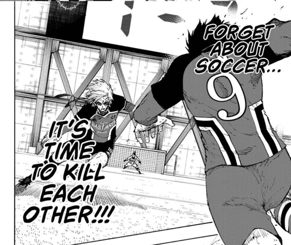

- history
- setting
- art
- characters
The Japan national team finished 16th in the 2018 FIFA World Cup. The Japan Football Union hires the football enigma Jinpachi Ego. His masterplan to lead Japan to stardom is Blue Lock, a training regimen designed to create the world's greatest egotistic striker. Those who fail Blue Lock will never again be permitted to represent Japan. Yoichi Isagi, an unknown high school football player who is conflicted about his playing style, decides to join the program competing against 299 other players to become the best striker in the world.
